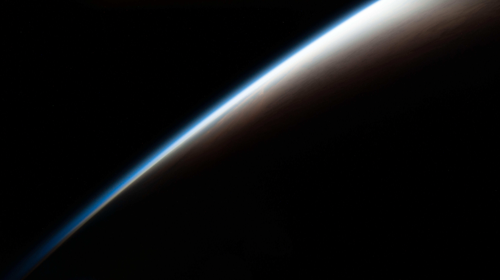
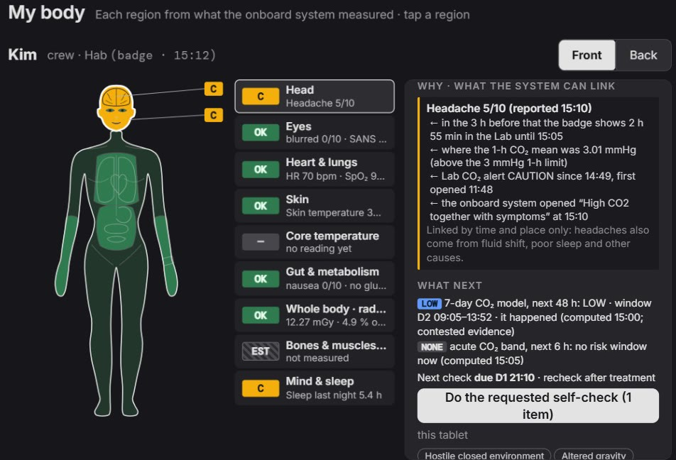
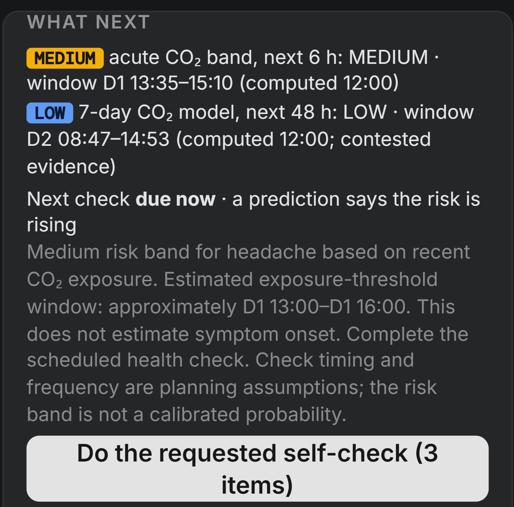
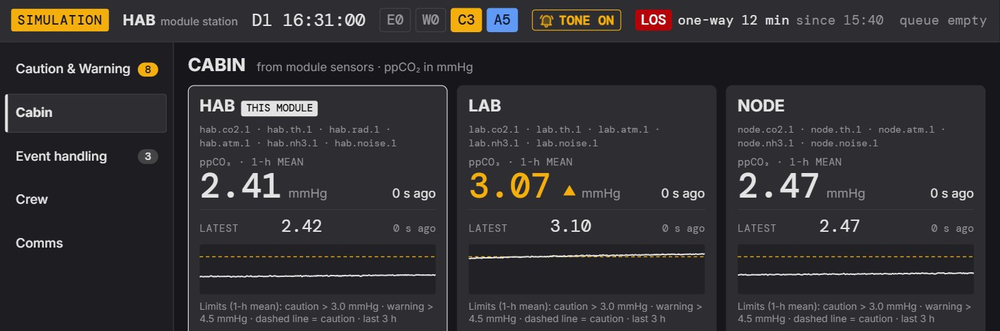
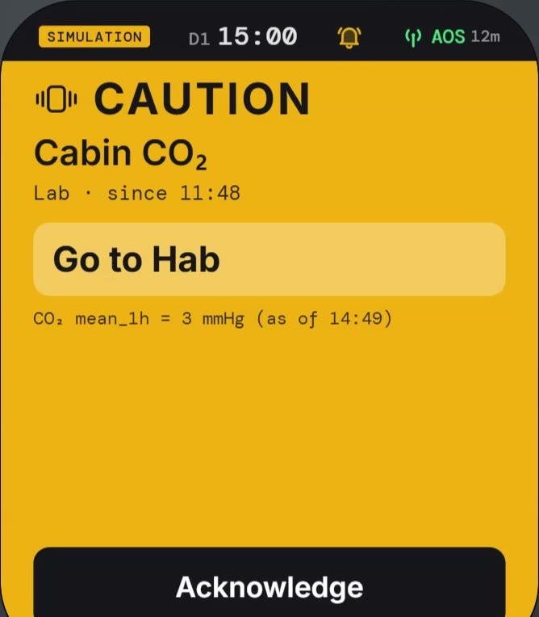
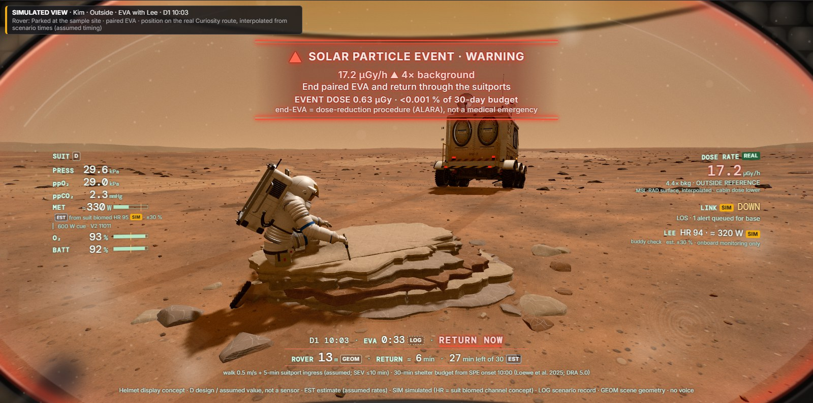
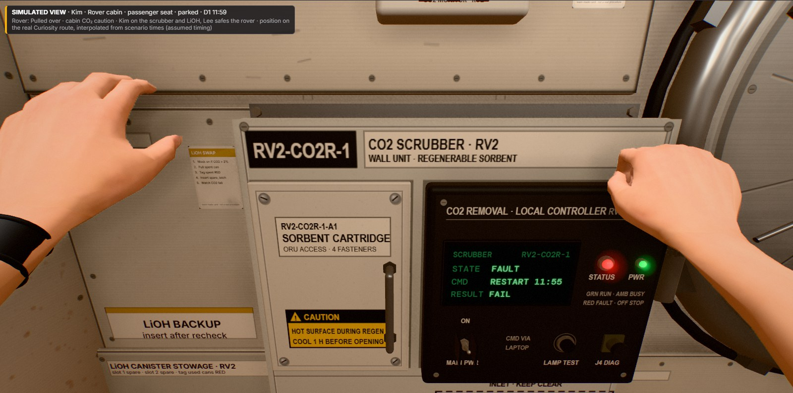

When Earth can’t answer,
the crew still can.
Image: NASA · iss068e044995 · iss073e1198938 · AI-assisted overlay
The farther from Earth, the slower the answers. So spotting a problem, alerting the right person, acting and confirming with new data all happen on board, whether or not Earth replies.
Candidate sensor from a teammate’s prototype · simulated data · not connected yet

PAUSED · CLICK TO PLAYEvery value names its source. No sensor? It says NEEDS DEVICE.
Scenario: at 12:00 it shows medium risk for 13:35–15:10, before any alarm; the measured caution comes at 14:49.
Radiation: dose rate integrated into a 48-h exposure curve for each person.
Scenario: Kim’s recent CO₂ exposure in the Lab gives a medium headache-risk band, so a self-check is due at 12:00 (right).
Models trained on the public LifeSnaps wearable dataset and on simulated, rule-labelled data. Not validated on astronauts; not a diagnosis.



PAUSED · CLICK TO PLAYWho can safely do what changes during the day. The plan follows the people.

